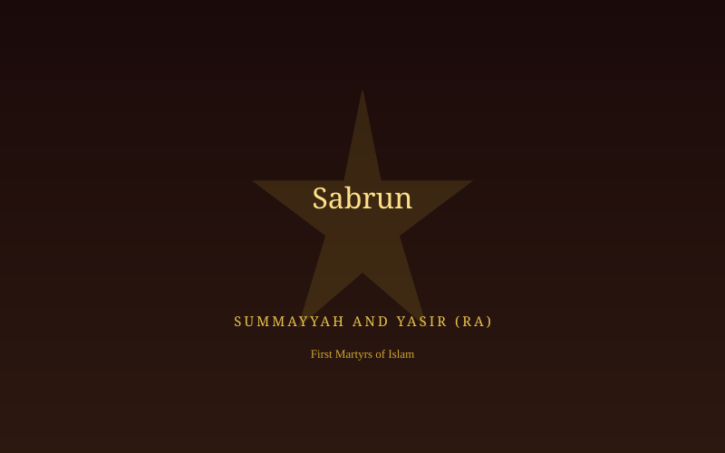

The Price the Weak Paid
The secret Da'wah sheltered most early believers from open violence — but not all of them. Those without a protective clan faced Makkah's cruelty in full view, simply for saying "My Lord is Allah."
Makkah, in the seventh century, operated on a tribal honour system: a man could not be harmed without inviting retaliation from his clan. This system, paradoxically, protected most early Muslims of standing — including the Prophet ﷺ himself, shielded by his uncle Abu Talib even though Abu Talib never accepted Islam. But it offered no protection at all to slaves, freed slaves, and the poor who had no clan behind them. It was these believers — the most vulnerable people in Makkah — who bore the very first violence directed at Islam.
"Patience, O family of Yasir, for your appointed place is Paradise." — The Prophet ﷺ, passing by Yasir's family as they were tortured, unable to stop it
Quraysh's leaders — chief among them Abu Jahl and Umayyah ibn Khalaf — used torture deliberately: to make an example of the powerless, and through their suffering, to frighten others away from the new faith. Instead, the steadfastness of these believers became one of early Islam's most powerful testimonies.
Those Who Endured

Sumayyah & Yasir (RA)
A husband and wife who became the first two martyrs of Islam, killed for refusing to renounce their faith.

Ammar ibn Yasir (RA)
Tortured alongside his parents, and later comforted by revelation when forced under duress to speak against his faith.

Bilal ibn Rabah (RA)
An enslaved Abyssinian believer, laid on burning sand under a boulder for refusing to deny Allah's oneness.

Khabbab ibn al-Aratt (RA)
Burned with hot iron by his own master, yet his faith never wavered.
What Endurance Teaches
Their steadfastness shaped how the Prophet ﷺ led the secret years — and offers timeless lessons in patience and conviction. The supplications they would have known reflect the same spirit.